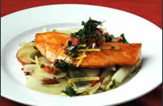

For more than two decades, Cafe Fontenebleu has been serving seasonal, ingredient-driven cuisine in a warm and unhurried setting. What began as a small family kitchen is today one of the most awarded tables in the region, and it still runs on the same principle it opened with: buy the best of what the season offers, then do as little to it as possible.
Our dining room seats 80 guests, and our private room accommodates another 60. Lunch is served Tuesday through Friday, dinner every evening except Monday.
Our Philosophy
Every morning our chefs visit the local market before writing the day's specials. Produce comes from growers we have worked with for years, seafood arrives from the coast the same day it is landed, and our bread is baked on the premises. Nothing on the menu travels further than it has to.
Seasonal menus rewritten four times a year
Bread, pasta and desserts made in house, daily
A cellar of more than 300 labels, with a focus on small producers
Vegetarian and gluten-free preparations for every course
This Week at the Cafe

Every Friday our kitchen prepares a single catch of the day, chosen at the market that morning and served until it runs out. This week: Alaskan Halibut with a Rich Loire Valley Beurre Blanc Sauce, with mashed purple Peruvian potatoes and haricot verts. See the full menu for the complete selection.
Plan Your Visit
Reservations are recommended for dinner and for any party of six or more. You will find opening hours, contact details and our reservation policy on the info page, and directions, parking and transport on the location page.
Hosting a celebration? Our private dining room is available for corporate events, parties and weddings — the details are on the special events page.